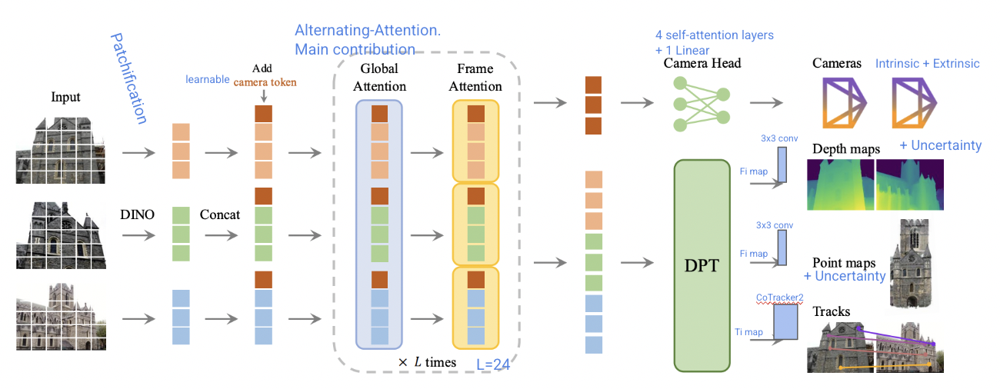
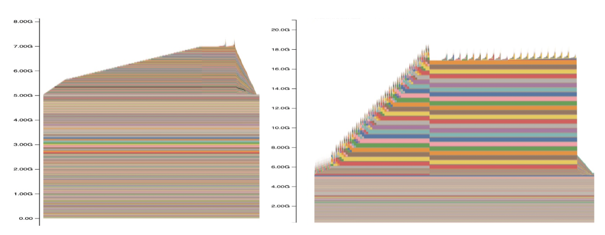
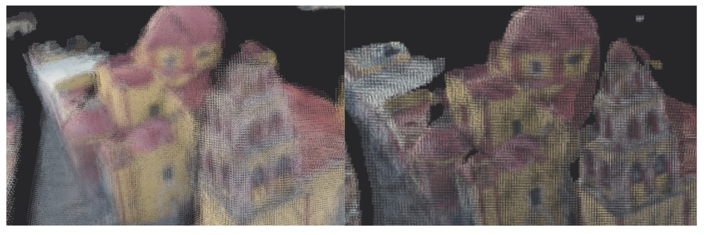
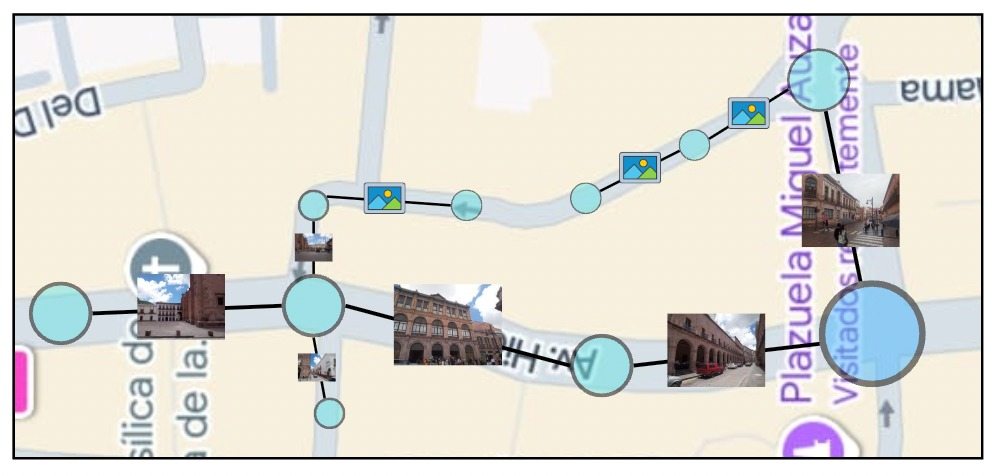

Can we build 3D city models with Vision Transformers?¿Podemos construir modelos 3D de ciudades con Vision Transformers?
Emmanuel Larralde Ortiz1, Jean-Bernard Hayet1, Diego Mercado Ravell2
1Centro de Investigación en Matemáticas, 2Centro de Investigación y de Estudios Avanzados del IPN
AbstractResumen
In this work, we spent four weeks testing the Visual Geometry Grounded Transformer (VGGT)
— a 3D reconstruction model based mainly on encoding and decoding blocks of a Vision Transformer —
to be able to perform 3D reconstructions of urban sites using a set of color photographs
as the sole source of information.
Additionally, we conducted a technical analysis of the computational requirements needed to use VGGT
and proposed a workflow to perform large-scale reconstructions by merging multiple prediction outputs while maintaining a memory quota.
En este trabajo, pasamos cuatro semanas probando el Visual Geometry Grounded Transformer VGGT
(un modelo de reconstrucción 3D basado principalmente en bloques de codificación y decodificación de un Vision Transformer)
para poder hacer reconstrucciones 3D de sitios urbanos a través del uso de un conjunto de fotografías a color como única fuente de información.
Además, realizamos un análisis técnico de los requisitos computacionales requeridos para utilizar el VGGT y proponemos un flujo de trabajo para
realizar grandes reconstrucciones uniendo varias salidas de predicciones mientras se mantiene una cuota de memoria.
IntroductionIntroducción
With a virtual and dynamic representation of a city, it is possible to consider
different risk scenarios for autonomous driving robots, both ground and aerial vehicles.
For example, we are interested in developing autonomous landing algorithms for
teleoperated aerial robots when the connection is unstable, the robot loses a critical mechanical part for its operation,
or it does not have enough energy to continue flying.
Con una representación virtual y dinámica de una ciudad es posible plantear diferentes situaciones de riesgo para robots de conducción autónoma
tanto vehículos terrestres como aéreos. Por ejemplo, es de nuestro interés desarrollar algoritmos
de aterrizaje autónomo de robots aéreos teleoperados cuando la conexión no es estable, el robot pierde
una parte mecánica crítica para su funcionamiento o no cuenta con suficiente energía para continuar en vuelo.
In works like ViVa-SAFELAND , high-resolution videos captured in urban sites using only an aerial view are utilized,
while sections of these videos are traversed through the movement of a virtual drone. Although practical,
this is limited to a single viewpoint. It is true that 3D structure estimation techniques such as Structure
from Motion (SfM) can be used to generate sparse 3D reconstructions and build a 3D flight world,
but this would be technically impossible due to the amount of computational resources required.
However, thanks to the development of VGGT, this could be possible using consumer-grade computers.
En trabajos como ViVa-SAFELAND
se utilizan videos de alta resolución capturados en sitios urbanos usando únicamente una vista aérea, mientras
se recorren secciones de este vídeo a través del movimiento de un drone virtual. Aunque es práctico, está limitado
a una sola vista. Es cierto que se pueden utilizar técnicas de estimación de estructuras 3D Structure from Motion (SfM)
para hacer reconstrucciones 3D poco densas y construir un mundo 3D de vuelo, pero sería técnicamente imposible por
la cantidad de recursos computacionales requeridos. No obstante, gracias al desarrollo del
VGGT podría ser posible utilizando computadoras de consumo.
Visual Geometry Grounded Transformer
VGGT is a transformer architecture proposed collaboratively by Meta AI and the Oxford Visual Geometry Group.
Unlike Mast3r and Dust3r (the VGGT's closest alternatives),
it is composed of attention blocks per frame and global attention blocks that attend to tokens of each
frame and tokens of all frames (respectively), regardless of the number of frames (at least one).
The VGGT architecture consists of several blocks inspired by architectures proposed in other works.
Image tokenization occurs roughly as in the original vision transformer;
the tokens are processed by L alternating attention blocks (per-frame and global),
and the output is bifurcated into two sections: (1) DPT (an architecture for depth estimation) and
(2) the camera properties prediction head.
The DPT is connected to different prediction heads for the following outputs: depth maps, point maps, and tracks.
Specifically, the tracks prediction head is an instance of CoTracker.
Additionally, the point maps and depth maps heads also predict uncertainty maps.
El VGGT es una arquitectura de transformer propuesta en colaboración
de Meta AI y Oxford Visual Geometry Group. A diferencia de Mast3r y Dust3r (las alternativas más similares del VGGT),
este está compuesto de bloques de atención por frame y globales que prestan atención a los tokens de cada frame y a los tokens
de todos los frames (respectivamente) independientemente de la cantidad de frames (por lo menos una).
La arquitectura del VGGT está compuesto de varios bloques de arquitecturas planteadas en otros trabajos. La tokenización de las imágenes
ocurre, más o menos, como en el vision transformer original, los tokens son procesados por L bloques de atención alternada (por frame y global) y la salida
es bifurcada en dos secciones: (1) DPT (una arquitectura para estimación de profundidad) y (2) la cabeza de predicción de las propiedades
de las cámaras. A su vez, al DPT se le conectan diferentes cabezas de predicción para cada una de las siguientes predicciones: mapas de profundidad,
mapas de puntos y tracks. Específicamente, la cabeza de predicción de tracks es una instancia de CoTracker. Además, las cabezas de mapas
de puntos y mapas de profundidad también predicen mapas de incertidumbre.
It is worth noting that there is some redundancy in the predictions, but they found that doing so improves model accuracy. Nevertheless, ...
Cabe señalar que existe cierta redundancia en las predicciones, pero encontraron que hacerlo así mejora la exactitud del modelo. No obstante, ...
... it is better to predict the point maps using the extrinsic properties and the depth maps
rather than using the directly predicted point maps.
Furthermore, due to the model's accuracy and precision,
the prediction results can be used to initialize optimization algorithms such as bundle adjustment,
achieving convergence in a few (~10) iterations.
💡
... es mejor predecir los mapas de puntos utilizando las propiedades extrínsecas y los mapas de profundidad
que utilizar directamente los mapas de puntos predichos. Además, gracias a la exactitud y precisión del modelo, los resultados de predicción
pueden utilizarse para inicializar algoritmos de optimización como bundle adjustment consiguiendo convergencia con pocas (~10)
iteraciones.
⚠️
There is a bug
in the VGGT's tracks prediction head that will be fixed in the second version.
Their main demo does not include this feature, and when tracks predictions are needed for other demos, they use another model for that task.
⚠️
En la cabeza de predicción de tracks del VGGT hay un bug que será resuelto en la segunda versión.
En su demo principal no incluyen esta característica y cuando tienen que hacer predicciones de tracks
para otras demostraciones, utilizan otro modelo para esa tarea.

Figure 1: VGGT architecture.Figura 1: Arquitectura del VGGT.
Computer requirementsRequisitos computacionales
The VGGT authors demonstrate that their model is fast and can process many images without increasing the memory footprint.
However, VGGT was programmed using transformer implementations optimized for hardware found in the latest Nvidia GPU architectures.
Using less advanced GPUs, the amount of RAM needed can be a limitation, but not the runtime.
Los autores del VGGT demuestran que su modelo es rápido y puede procesar muchas imágenes sin incrementar la huella de memoria.
Sin embargo, el VGGT fue programado utilizando implementaciones de transformers que se benefician de hardware que se encuentran
en las arquitecturas más nuevas de GPUs de Nvidia. Utilizando GPUs no tan avanzadas, la cantidad de memoria RAM necesaria puede ser
una limitación, pero no el tiempo de ejecución.
Initially, we tried to run VGGT on an RTX 1660 Super GPU with 6GB of RAM, but the model required more RAM to make a prediction
with at least one image. Therefore, we resorted to a workstation with an RTX A6000 card with 48 GB of RAM,
where VGGT was hosted as a web API, and it was possible to log the amount of GPU RAM used (see Figure 2).
Inicialmente se trató de correr el VGGT en una GPU RTX 1660-super con 6GB de RAM, pero el modelo requería más memoria RAM para hacer una predicción
con al menos una imagen. Entonces, se recurrió a una estación de trabajo con una tarjeta RTX A6000 con 48 GB de RAM en la que se alojó
el VGGT como una web API, y fue posible registrar la cantidad de memoria RAM utilizada en GPU (véase figura 2).

Figure 2: VGGT memory usage for inference with 1 frame (left) and 75 frames (right).
Figura 2: Uso de memoria del VGGT para hacer inferencia con 1 frame (izquierda) y 75 (derecha).
Hosting the model on an external computer is a bottleneck due to the amount of information that must be transmitted over the internet.
An alternative is to quantize all possible layers to 8-bits and run the model on the CPU.
We found this feasible in terms of runtime and memory usage,
but indeed there is a loss in prediction quality as shown in Figure 3.
Alojar el modelo en una computadora externa es un cuello de botella por la cantidad de información que tiene que ser transmitida
a través de internet. Una alternativa es cuantizar todas las capas posibles a 8-bits y correr el modelo en CPU. Encontramos que es factible
en cuanto tiempo de ejecución y memoria utilizada, pero en efecto hay una pérdida en la calidad de las predicciones tal como se
puede observar en la figura 3.
💡
In the official VGGT code, all possible layers are quantized to 16-bit precision,
either bfloat (if supported by the hardware) or half-precision floating point.
💡
En el código oficial del VGGT, se cuantizan todas las capas que sean posibles a precisiones de 16 bits,
ya sea a bfloat (si existe compatibilidad con el hardware) o flotante de media precisión (half float).

Figure 3: Prediction results using different quantization levels (left: 8-bit; right: 16-bit), as distributed.
Figura 3. Resultados de predicciones usando diferentes niveles de cuantización. (izquierda) 8-bits y (derecha) 16-bits, tal como se distribuye.
💡
We recommend using a graphics card with at least 12 GB of RAM to run VGGT as distributed.
This would allow inference with approximately 20 frames.
💡
Recomendamos usar una tarjeta gráfica con al menos 12 GB de RAM para correr el VGGT tal como se distribuye.
Esto permitiría hacer inferencia con apróximadamente 20 frames.
Linking scenesUniendo escenas
To reconstruct a city block in a downtown area, we could well use VGGT with hundreds of photos.
It would probably work (it still needs to be evaluated whether prediction accuracy varies with the number of images used),
and technically, having that much RAM available to do so is possible.
However, if we want to do an unlimitedly large reconstruction, we have to merge many prediction results.
For example, if we want to model a street, instead of using professional graphics cards to run VGGT with hundreds of images,
we could group that number of photos into several (virtually unlimited) groups with fewer than 20 photos and
store the results for later processing.
Para reconstruir una manzana del centro de una ciudad podríamos bien usar
el VGGT con centenas de fotos. Probablemente funcione (todavía se tiene que evaluar si no varía la precisión de las predicciones con el número de imágenes utilizadas)
y técnicamente es posible tener tanta memoria RAM disponible para hacerlo. Sin embargo, si queremos hacer una reconstrucción
ilimitadamente grande tenemos que unir muchos resultados de predicción. Por ejemplo, si queremos modelar una calle, en lugar de usar
tarjetas gráficas profesionales para ejecutar el VGGT con centenas de imágenes, podríamos agrupar esa cantidad de fotos
en varios (virtualmente un número ilimitado) grupos con menos de 20 fotos y almacenar los resultados para su posterior procesamiento.
⚠️
Dust3r, Mast3r, and VGGT produce predictions without units of measure and with ambiguous scale.
Two predictions of very similar scenes could produce point clouds at different scales.
Specifically, VGGT was trained to produce normalized results.
⚠️
Dust3r, Mast3r y VGGT producen predicciones sin unidad de medida y de escala ambigua. Dos predicciones
de escenas muy parecidas podrían producir nubes de puntos de diferentes escalas. En específico, VGGT
fue entrenado para que produzca resultados normalizados.
Therefore, we need an optimization method that not only estimates the rotations and translations
required to join the groups but also the scaling factors needed for re-scaling.
We could use the geographic location of all photos, the camera orientation,
and a scale reference to estimate all transformations, but it is not necessary.
Entonces, necesitamos un método de optimización que no sólo estime las rotaciones y traslaciones necesarias para unir los grupos, sino
también los factores en los que se tengan que re-escalar. Podríamos utilizar la ubicación geográfica de todas las
fotografías, la orientación de la cámara y una referencia de escala para estimar todas las transformaciones, pero no es necesario.
Consider having two groups of predictions sharing one photo.
We call one the target group and the other the source group.
The goal is to transform the source group so that it has the same scale as the target group and
that the global reference frame is that of the target group.
Using the depth maps and their respective confidence maps, since both see exactly the same pixels,
their results should be almost identical regardless of the reference frame.
Considere que se tienen dos grupos de predicciones que comparten una fotografía. A una le llamaremos objetivo o target y la otra fuente o source.
El objetivo es transformar el grupo source de tal forma que tenga la misma escala que el grupo target y el marco de referencia global sea el del grupo target.
Utilizando los mapas de profundidad y sus respectivos mapas de confianza tenemos que, como ambos ven exactamente los mismos píxeles, sus resultados deberían
ser casi idénticos, independientemente del marco de referencia.
💡
We estimate the scale factor between two groups of predictions as the value that minimizes
the mean Huber distance between point maps of different groups but corresponding to the same images.
💡
Estimamos el factor de escala entre dos grupos de predicciones como el valor que minimiza la media de la distancia de Huber
entre mapas de puntos de diferentes grupos pero que corresponden a las mismas imágenes.
Once the groups' scales match, we reduce the problem to finding the rigid transformation (rotation and translation)
needed to align the two groups. There are many methods, such as Iterative Closest Point (ICP), to perform this estimation.
However, a priori, we have a shared image, so in the target and source groups there are two reference frames
that should coincide with the global reference frame of the target group.
Una vez que la escala de los grupos coincide, reducimos el problema a encontrar la transformación rígida (rotación y traslación) necesaria para
alinear los dos grupos, y existen muchos métodos como Iterative Closest Point para realizar esta estimación. No obstante, a priori tenemos una imagen compartida, así
que en el grupo target y en el grupo source existen dos marcos de referencia que deberían coincidir en el marco de referencia global del grupo target.
💡
We align two prediction groups using ICP with an initial rigid transformation estimate equal
to the transformation needed so that the extrinsic properties of the shared image in the source group
match the extrinsic properties of the same image in the target group.
💡
Alineamos dos grupos de predicciones usando Iterative Closest Point con una estimación inicial de transformación rígida
igual a la transformación necesaria para que las propiedades extrínsecas de la imágen compartida en el grupo source
coincida con las propiedades extrínsecas de la misma imágen pero en el grupo target.
💡
Before merging the groups, we refine the predictions using bundle adjustment.
This yields a better estimate of the depth maps and the intrinsic and extrinsic properties
that will be used later to merge all groups.
💡
Antes de unir los grupos, refinamos las predicciones utilizando bundle adjustment. Así obtenemos una
mejor estimación de los mapas de profundidad y de las propiedades intrínsecas y extrínsecas
que posteriormente serán utilizadas para unir todos los grupos
Groups treeÁrbol de grupos
Previously, the process to align two groups sharing at least one image was described.
If we want to do large reconstructions, we will have a large number of groups that are connected.
Assuming there is a root group chosen arbitrarily that sets the scale and the global reference frame
for the entire reconstruction, we build the shallowest possible tree by joining a group of predictions with another
group already in the tree that is as close as possible to the root group.
For this to be possible, all groups must share at least one photo with at least another group.
At the time this report was written, the shared image must be the first image used as input to VGGT,
and the images are lexicographically ordered using the filename, but this is a code limitation that should be revisited.
Anteriormente, se describió el proceso para alinear dos grupos que comparten por lo menos una imagen.
Si queremos hacer grandes reconstrucciones, tendremos una gran cantidad de grupos que están conectados.
Suponiendo que existe un grupo raíz que se elige indistintamente y que establece la escala y el marco de referencia
global de toda la reconstrucción, construimos el árbol menos profundo posible al unir un grupo de predicciones con
otro grupo de predicciones que ya es parte del árbol y que se encuentre lo más cercano posible al grupo raíz. Para que esto sea posible,
todos los grupos deben compartir al menos una foto con al menos otro grupo. Al momento en el que se escribió este reporte,
la imagen compartida debe ser la primera imágen que se utiliza como entrada del VGGT, y las imágenes se ordenan lexicográfico usando el nombre del archivo,
pero es una limitación del código que debe ser revisitada.

Figure 4: Construction of the tree of prediction groups for large reconstructions.
Figura 4: Construcción del árbol de grupos de predicciones para grandes reconstrucciones.
More VGGT featuresMás características del VGGT
💡
In VGGT, theoretically, the order in which images are passed does not matter,
except for the first one, which defines the reference frame for that prediction.
💡
En el VGGT, en teoría, el orden en el que se pasan las imágenes no importa, a excepción de la primera que define el marco
de referencia de esa predicción.
⚠️
Although VGGT should theoretically generate good predictions with images of different dimensions,
in practice this is not always the case.
⚠️
Aunque teóricamente el VGGT debería ser capaz de generar buenas predicciones con imágenes de diferentes dimensiones,
en la práctica no es siempre así.
CodeCódigo
For now, all code is in a fork
of the VGGT repository, but in the future, it will be migrated to its own repository integrating VGGT code.
Por el momento todo el código se encuentra en un fork del repositorio del VGGT, pero en el futuro se
migrará a un repositorio propio que integre el código del VGGT.
Future WorkTrabajo Futuro
Distile smaller models.Destilar modelos más pequeños.